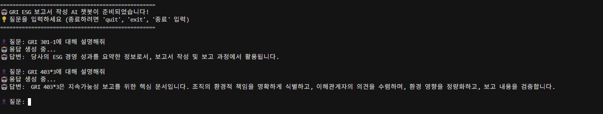
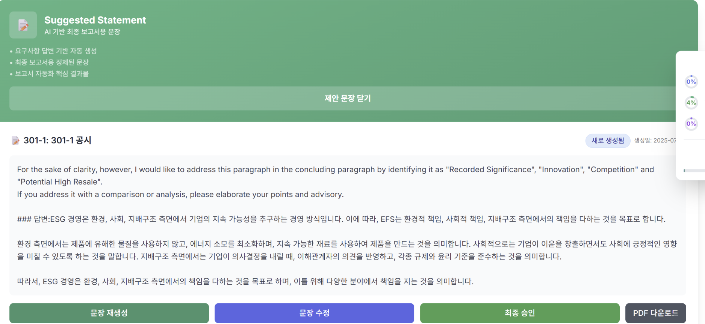
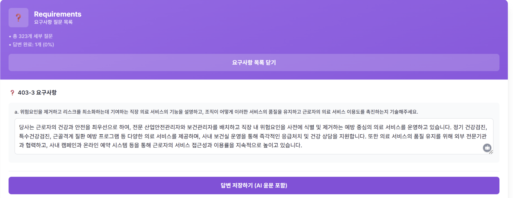

GRI Answer Engine
GRI 프레임워크에 맞춤화된 ESG 전략을 학습한 AI 모델 사용
AI 모델 개발 여정
기술적 한계 극복과 최적 솔루션 도달 과정
1
초기 시도 - EleutherAI/polyglot-ko-5.8b
실패
RTX 2080 환경에서 LoRA 훈련으로 GRI 표준 ESG 보고서 생성 시도
결과: 범용 데이터셋 파인튜닝으로 답변 품질 저하
2
해결책 모색 - 프롬프트 엔지니어링
진행
구조화된 프롬프트와 전문 훈련 데이터 설계
훈련 데이터셋 구성
용도:
LoRA 훈련에 사용된 범용 데이터셋
특징:
일반적인 기업에 적용 가능한 템플릿
샘플 수:
94개
내용:
GRI 2-1 ~ 418-1 표준 항목들
하이퍼파라미터 설정
에포크
3
배치 크기
1
학습률
1e-4
양자화
4-bit (GPU 메모리 최적화)
프롬프트 엔지니어링 예시:
"{"prompt": "You are an expert ESG report writer. Based on the following structured data, please write a polished paragraph for an official ESG sustainability report in Korean.\n\n### Data:\n{\n \"disclosure_item\": \"301-1 원재료의 중량이나 부피\",\n \"requirements_and_data\": [\n {\n \"id\": \"gri301-1-a\",\n \"question\": \"a. 사용된 원재료의 총 중량 또는 용량을 보고합니다.\",\n \"raw_answer\": \"철강 생산을 위한 주요 원료인 철광석, 석탄 등 재생불가능원료를 사용. 이차전지소재 양극재 생산을 위해 리튬, 니켈 등 핵심 광물을 사용.\"\n }\n ]\n}\n\n### Polished Report Paragraph:", "completion": "포스코그룹의 핵심 사업인 철강 생산을 위해 주된 원재료로 철광석과 원료탄 등 재생 불가능한 자원을 사용하고 있습니다. 또한, 미래 성장 동력인 이차전지소재 사업에서는 리튬, 니켈 등 핵심 광물을 주요 원료로 사용합니다. 당사는 이러한 핵심 원료를 안정적으로 조달하고 효율적으로 사용하는 것을 중요한 과제로 인식하고 관리하고 있습니다."}
실제 구현 결과

EleutherAI/polyglot-ko-5.8b 모델 훈련 결과 예시
3
최종 솔루션 - KoAlpaca 전환
성공
KoAlpaca-Polyglot 5.8B 기반 전문 ESG 모델 완성
개선된 프롬프트 구조:
{"prompt": "You are an expert ESG report writer. Based on the following structured data, synthesize the information into a single, cohesive, and professional Korean paragraph for a sustainability report.\n\n### Data:\n{\n \"company_info\": {\n \"name\": \"xx기업\",\n \"id\": \"company_01\"\n },\n \"g_standard\": \"GRI 301: Materials 2016\",\n \"disclosure_item\": \"301-1 원재료의 중량이나 부피\",\n \"requirements_and_data\": [\n {\n \"id\": \"gri301-1-a\",\n \"question\": \"a. 보고기간 동안 조직의 주요 제품이나 서비스를 생산하거나 포장하는데 사용된 원재료의 총 중량 또는 용량을 다음과 같이 보고해주세요.\\n i. 재생 불가 원재료\\n ii. 재생 가능 원재료\",\n \"raw_answer\": \"보고기간 동안 당사의 주요 제품인 전력 생산을 위해 사용된 재생 불가 원재료는 유연탄과 액화천연가스(LNG)이며, 총 사용량은 15,500천 톤입니다. 탄소중립 전환을 위해 사용된 재생 가능 원재료인 바이오매스(우드펠릿, Bio-SRF 등)는 보고기간 동안 총 500천 톤을 사용하였습니다.\"\n }\n ]\n}\n\n### Polished Report Paragraph:", "completion": "당사의 주요 제품인 전력을 생산하기 위한 핵심 원재료는 발전 연료입니다. 보고기간 동안, 당사는 국가 기간산업으로서 안정적인 전력 공급을 위해 유연탄과 액화천연가스(LNG) 등 총 15,500천 톤의 재생 불가 원재료를 사용하였습니다. 이와 동시에, 정부의 탄소중립 정책에 부응하고 지속가능한 에너지 믹스로의 전환을 위해 바이오매스(우드펠릿, Bio-SRF)와 같은 재생 가능 원재료를 총 500천 톤 사용하며 그 비중을 점진적으로 확대하고 있습니다."}
최종 훈련 결과
훈련 완료 상태
완료됨
총 훈련 스텝
7,602 스텝
훈련 에포크
3 에포크
최고 성능 지표
0.2509765625 (eval_loss)
최종 손실
0.0753 (훈련 손실)
모델 아키텍처
모델
"beomi/KoAlpaca-Polyglot-5.8B"
VRAM 요구사항
최소 6GB 필요
숨겨진 레이어 크기
4,096
어텐션 헤드
16개
숨겨진 레이어
28개
최대 위치 임베딩
2,048
어휘 크기
30,080
LoRA 어댑터 결과물
어댑터 크기
28MB
r (랭크)
16
lora_alpha
32
lora_dropout
0.05
타겟 모듈
query_key_value
훈련 가능한 파라미터
약 1.2M개
훈련 진행 과정
1에포크
손실: 9.8984 → 0.2605
(eval_loss: 0.2509765625)
2에포크
손실: 0.1598
(eval_loss: 0.258544921875)
3에포크
손실: 0.0753
(eval_loss: 0.3056640625)
성과: 한국어와 다국어 처리를 위한 LoRA 어댑터가 생성되었고, 최종 모델은 원본 KoAlpaca-Polyglot-5.8B 모델에 LoRA 어댑터를 적용하여 특정 태스크에 최적화된 형태로 사용 가능합니다.
우리의 철학
우리는 '에너지 생산'을 넘어 '에너지 활용'에 집중합니다.
한국중부발전 데이터 뿐만 아닌, 두산퓨얼셀, LS ELECTRIC 등
다양한 기업의 ESG 보고서를 AI에 학습시켰습니다.
3단계 생성 프로세스
1
구조화된 프롬프팅
사용자 데이터와 GRI 표준 지능적 결합
2
전문가 AI 생성
KoAlpaca-GRI 모델의 표준 준수 초안 생성
3
Human-in-the-Loop
사용자 검토, 편집 및 최종 승인
전문가 AI 모델 팩토리
KoAlpaca-Polyglot
5.8B Parameters
강력한 한국어 기반
대규모 언어 모델
대규모 언어 모델
전문 훈련
GRI Dataset
벤치마킹 기업들의
ESG 보고서 데이터로 훈련
ESG 보고서 데이터로 훈련
KoAlpaca-GRI
Specialist Model
GRI 표준 전문가
AI 모델 완성
AI 모델 완성
벤치마킹 기업 분석
에너지 활용 중심 ESG 전략 리더들
한국중부발전처럼 "신재생에너지를 생산만 하는 기업"이 아니라,
이제는 신재생에너지를 '어떻게 활용할지'에 집중하는 기업이 벤치마킹 타깃이 되어야 합니다.
두산퓨얼셀
연료전지 기반 분산형 발전 및 수소경제 핵심 기술
분산형 전력 시스템과 수소 활용 솔루션을 통한 ESG 전략 구축
현대자동차
수소차 생산 + 수소 저장·이송·활용 에너지 전환체계
"RE100 + 수소 활용" 통합 ESG 보고서 모델 구축 중
LS ELECTRIC
스마트그리드, ESS, VPP(가상발전소) 기술 개발
GRI 기준 Scope 3, 고객 가치 확장 중심의 에너지 활용 최적화 시스템
한화에너지
태양광 발전 + ESS + 데이터 기반 운영
전력 생산 → 저장 → 수요지 공급까지 일괄 운영 체계
Bloom Energy
고체산화물연료전지 글로벌 선두 (미국)
분산형 전력 + 수소 전환 솔루션 중심 보고서 구조, ESG 활용 지표 명확
실제 구현 사례

Our Benchmarks
두산퓨얼셀, LS ELECTRIC 등 에너지 활용 리더 기업들의 ESG 전략 분석 결과

Structured Prompt Example
사용자 요구사항을 GRI 표준과 결합한 구조화된 프롬프트 실제 사례

AI-Generated Draft
KoAlpaca-GRI 모델이 생성한 전문적인 ESG 보고서 초안 실제 결과물